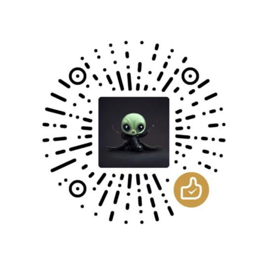

乔木 X 助手
读得清楚，聊得顺手。
正在准备
读取你的设置…
折叠，不是删除。
原文随时可展开。判断不对，点一下真人图标，就能保留这条回复。
已折叠 · 界面示例
示例回复：这个观点极具启发性，为我们理解未来趋势提供了全新视角。
94% 为演示分数。
看看主帖的热度潜力
根据发布时间与互动量，估计主帖能否达到你的浏览量目标。数据不足时不预测。
你看好的，后来怎么样了？
保留当时判断，3 天后对照实际表现。
打开原帖时更新可见数据，不会后台自动抓取。到期但没有新数据时显示「待复盘」。
留下你想看的回复。
选一种整理方式。你的手动标注始终优先。
这些分数代表什么？
分数是模型估计，不能证明作者身份。简短、礼貌或文字流畅，都不等于 AI。引流与附加规则至少达到 90% 才触发折叠。
你的判断，留在这里。
随时改标，或回到原帖再读一遍。
标注如何帮助后续判断？
记录保存在本机，不会因为超过 40 条就删除。每次从最近 40 条标注中选最多 6 条相关案例，帮助模型理解你的判断。不会把全部记录发给模型，也不会重新训练模型。
想找的人，随时 @。
发帖或回复时，点编辑器工具栏的 @ 图标。
添加常用账号
从启用后开始记录，不扫描历史回复。未记录的头像和昵称，会在你读到对方帖子时补上。联系人只存本机，不参与 AI 判断。
预置 @vista8，方便向作者反馈问题。可编辑或移除；移除后不会自动加回。
手动添加我的 X 账号
哪些账号，最常出现在你的标注里？
按你的标注条数排序。两种记录一起看，再决定保留谁。
仅统计你的人工标注，不代表账号身份。关注或拉黑需在 X 完成；本机屏蔽立即生效。旧记录的昵称会在你再次读到对应帖子时补上。
管理保留与屏蔽名单
始终保留
本机屏蔽
最近的保留与折叠操作
“只保留此条”不会被当作真人标注。
已保存的书签
搜索、添加备注，或导出为 Markdown。
打开 X 书签页即可自动保存。向下浏览以保存更多，也可在页面顶部暂停。内容仅保存在此浏览器。
留一点想法，下次更好找。
这里只显示已保存的书签，不代表全部收藏。长帖请在 X 展开后保存；记录时间为首次保存时间。导出保留原帖和图片链接，视频请在原帖查看。
连接一次，随时可用。
用你的 Jev 密钥开始。验证成功后会自动保存。
高级设置
自定义服务需要支持 state + questions 和 Noul 概率。普通聊天接口不能直接使用。
数据会发到哪里？
判断时会把可见帖子文字、上下文及少量人工样本发给所选模型服务。不会发送 X 登录信息或私信。
已保存的密钥默认隐藏，只有你点显示时才会在此处展示。
今天，最多判断多少次？
把注意力，留给值得读的内容。
乔木 X 助手由向阳乔木开发，源码公开。你的反馈，让它更好用。

管理本机数据
清空后会移除判断缓存、人工标注与手动保留记录。账号名单、密钥和今日用量会保留。